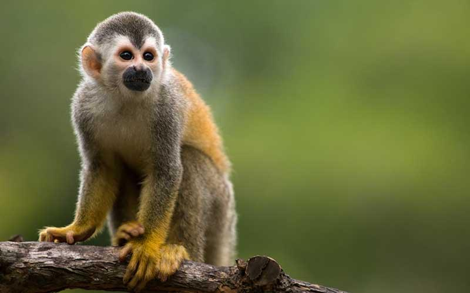

Zona de Selva Tropical
En esta zona podras conocer una variedad de animales de la sabana entre ellos los que se muestran a continuacion
Guacamayas
Las guacamayas son aves tropicales conocidas por su plumaje brillante y colores vibrantes. Originarias de América Central y del Sur, son excelentes voladoras y se encuentran generalmente en las selvas. Son animales inteligentes y sociales, capaces de imitar sonidos y aprender trucos.
Monos
Los monos son primates muy inteligentes que habitan en diversas regiones del mundo. Viven en grupos y tienen una amplia gama de comportamientos sociales. Pueden usar herramientas, comunicarse entre sí y son conocidos por su agilidad y destreza para trepar árboles.
Lémures

Los lémures son primates endémicos de Madagascar. Viven en los bosques tropicales y se caracterizan por su cola larga y peluda, que utilizan para equilibrarse. Son animales sociales que se desplazan en grupos y tienen hábitos nocturnos en algunas especies.